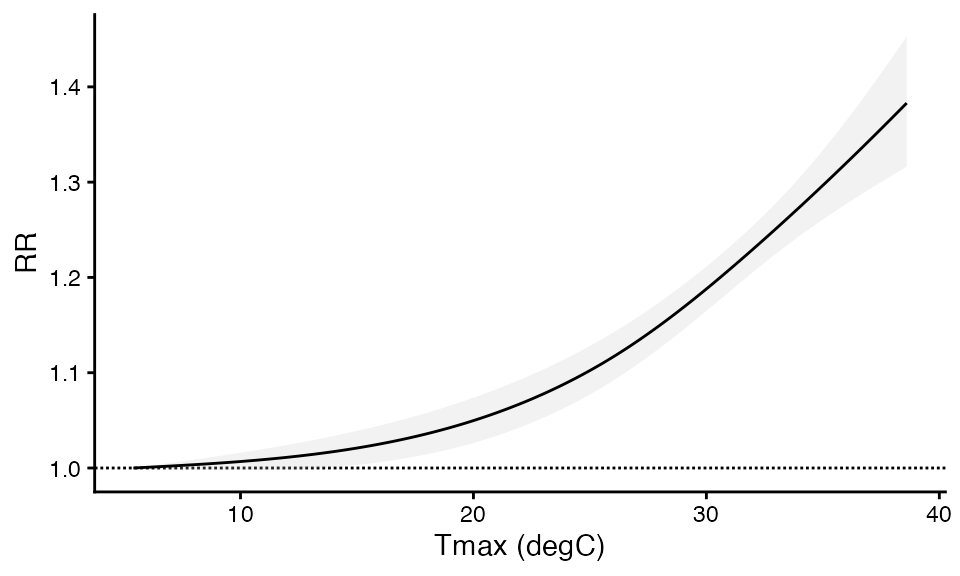
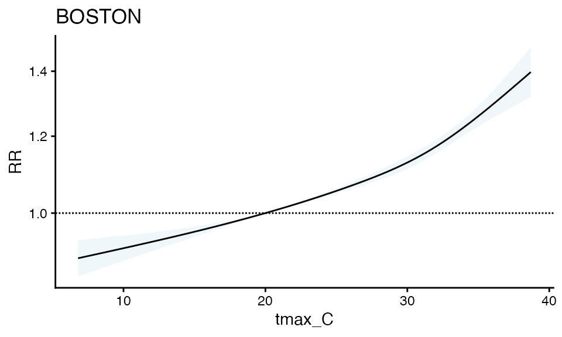
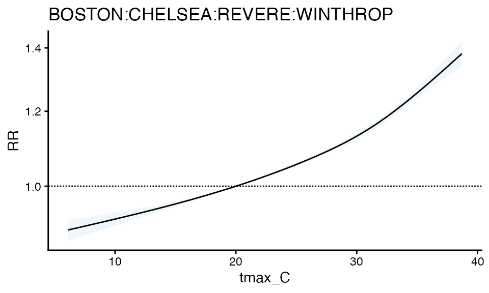

one_stage_time_series_demo
one_stage_time_series_demo.RmdTime-Series Analysis and CityClimateHealth
Let’s use built-in functions to examine a single set of beta
coefficients for heat-health relationships in a single or multiple
geographic unit. We’ll start with a review of DLNM, and then show how
it’s implemented with time-series analysis in
cityClimateHealth for both the single and multi-zone
cases.
For testing purposes, start with your largest geographic unit!
Exposure data
First let’s make the exposure matrix for this single zone. There is a
simulated exposure dataset included in the package
called ma_exposure, which lists daily
maximum temperatures each day in each town. Let’s take a look
at the available data:
head(ma_exposure)
#> date tmax_C TOWN20 COUNTY20
#> 1 2010-01-01 -1.6 ABINGTON PLYMOUTH
#> 2 2010-01-02 2.0 ABINGTON PLYMOUTH
#> 3 2010-01-03 -1.2 ABINGTON PLYMOUTH
#> 4 2010-01-04 -6.4 ABINGTON PLYMOUTH
#> 5 2010-01-05 -1.8 ABINGTON PLYMOUTH
#> 6 2010-01-06 -3.3 ABINGTON PLYMOUTHNotice how this dataset contains temperature for the whole year. This is a good starting place.
Now, we’ll subset to just Boston, to start with a single-zone example.
boston_exposure <- subset(ma_exposure, TOWN20 == 'BOSTON')
head(boston_exposure)
#> date tmax_C TOWN20 COUNTY20
#> 75121 2010-01-01 -0.4 BOSTON SUFFOLK
#> 75122 2010-01-02 1.4 BOSTON SUFFOLK
#> 75123 2010-01-03 -1.4 BOSTON SUFFOLK
#> 75124 2010-01-04 -0.4 BOSTON SUFFOLK
#> 75125 2010-01-05 0.7 BOSTON SUFFOLK
#> 75126 2010-01-06 1.2 BOSTON SUFFOLKAlso notice that these data are messy, as is common in environmental data, there are both NA values and days where there are no measurements:
# Sept 17 2010 has NA data
boston_exposure[255:260,]
#> date tmax_C TOWN20 COUNTY20
#> 75375 2010-09-16 19.4 BOSTON SUFFOLK
#> 75376 2010-09-17 NA BOSTON SUFFOLK
#> 75377 2010-09-18 19.1 BOSTON SUFFOLK
#> 75378 2010-09-19 19.6 BOSTON SUFFOLK
#> 75379 2010-09-20 23.6 BOSTON SUFFOLK
#> 75380 2010-09-21 20.8 BOSTON SUFFOLK
# July 13 2010 is missing
boston_exposure[190:195,]
#> date tmax_C TOWN20 COUNTY20
#> 75310 2010-07-12 31.7 BOSTON SUFFOLK
#> 75311 2010-07-14 31.9 BOSTON SUFFOLK
#> 75312 2010-07-15 23.7 BOSTON SUFFOLK
#> 75313 2010-07-16 28.8 BOSTON SUFFOLK
#> 75314 2010-07-17 33.3 BOSTON SUFFOLK
#> 75315 2010-07-18 33.1 BOSTON SUFFOLKIn the next step we’ll introduce a function which (a) cleans the data and (b) subsets to just warm season months (which in Boston is May through September). It’s good to keep the full temperature range before this point so we can use extra data around the cutoffs to make sure the temperature matrix is full.
First, define the column mapping. The main geographic unit of
analysis (the geo_unit) is called TOWN20,
however we may also want to aggregate in some later steps to the group
level, so the grouping variable (geo_unit_grp) is called
COUNTY20. Providing a named list in this way avoids having
to rename columns throughout the process.
exposure_columns <- list(
"date" = "date",
"exposure" = "tmax_C",
"geo_unit" = "TOWN20",
"geo_unit_grp" = "COUNTY20"
)Next pass in your full temperature time-series in this step.
boston_exposure_mat <- make_exposure_matrix(boston_exposure,
exposure_columns,
time_subset = list(month = 5:9))
#> -- NA values automatically removed
#> strata dt_by = 'day', setting strata as geo_unit:yr:mn:dow
head(boston_exposure_mat)
#> date TOWN20 COUNTY20 tmax_C strata match_strata
#> <IDat> <char> <char> <num> <char> <char>
#> 1: 2010-05-01 BOSTON SUFFOLK 23.1 BOSTON:yr2010:mn05:dow07 BOSTON:2010-05-01
#> 2: 2010-05-02 BOSTON SUFFOLK 26.1 BOSTON:yr2010:mn05:dow01 BOSTON:2010-05-02
#> 3: 2010-05-03 BOSTON SUFFOLK 31.6 BOSTON:yr2010:mn05:dow02 BOSTON:2010-05-03
#> 4: 2010-05-04 BOSTON SUFFOLK 27.8 BOSTON:yr2010:mn05:dow03 BOSTON:2010-05-04
#> 5: 2010-05-05 BOSTON SUFFOLK 26.3 BOSTON:yr2010:mn05:dow04 BOSTON:2010-05-05
#> 6: 2010-05-06 BOSTON SUFFOLK 25.9 BOSTON:yr2010:mn05:dow05 BOSTON:2010-05-06
#> explag1 explag2 explag3 explag4 explag5
#> <num> <num> <num> <num> <num>
#> 1: 15.7 8.3 10.9 16.4 18.7
#> 2: 23.1 15.7 8.3 10.9 16.4
#> 3: 26.1 23.1 15.7 8.3 10.9
#> 4: 31.6 26.1 23.1 15.7 8.3
#> 5: 27.8 31.6 26.1 23.1 15.7
#> 6: 26.3 27.8 31.6 26.1 23.1You can check that the two problems we saw before – missing data and NA data – are gone now
# Sept 17 2010 now has no NA data
boston_exposure_mat[138:142,]
#> date TOWN20 COUNTY20 tmax_C strata match_strata
#> <IDat> <char> <char> <num> <char> <char>
#> 1: 2010-09-15 BOSTON SUFFOLK 22.60 BOSTON:yr2010:mn09:dow04 BOSTON:2010-09-15
#> 2: 2010-09-16 BOSTON SUFFOLK 19.40 BOSTON:yr2010:mn09:dow05 BOSTON:2010-09-16
#> 3: 2010-09-17 BOSTON SUFFOLK 19.25 BOSTON:yr2010:mn09:dow06 BOSTON:2010-09-17
#> 4: 2010-09-18 BOSTON SUFFOLK 19.10 BOSTON:yr2010:mn09:dow07 BOSTON:2010-09-18
#> 5: 2010-09-19 BOSTON SUFFOLK 19.60 BOSTON:yr2010:mn09:dow01 BOSTON:2010-09-19
#> explag1 explag2 explag3 explag4 explag5
#> <num> <num> <num> <num> <num>
#> 1: 19.80 18.50 22.8 21.0 22.0
#> 2: 22.60 19.80 18.5 22.8 21.0
#> 3: 19.40 22.60 19.8 18.5 22.8
#> 4: 19.25 19.40 22.6 19.8 18.5
#> 5: 19.10 19.25 19.4 22.6 19.8
# July 13 2010 is now not missing
boston_exposure_mat[72:77,]
#> date TOWN20 COUNTY20 tmax_C strata match_strata
#> <IDat> <char> <char> <num> <char> <char>
#> 1: 2010-07-11 BOSTON SUFFOLK 29.2 BOSTON:yr2010:mn07:dow01 BOSTON:2010-07-11
#> 2: 2010-07-12 BOSTON SUFFOLK 31.7 BOSTON:yr2010:mn07:dow02 BOSTON:2010-07-12
#> 3: 2010-07-13 BOSTON SUFFOLK 31.8 BOSTON:yr2010:mn07:dow03 BOSTON:2010-07-13
#> 4: 2010-07-14 BOSTON SUFFOLK 31.9 BOSTON:yr2010:mn07:dow04 BOSTON:2010-07-14
#> 5: 2010-07-15 BOSTON SUFFOLK 23.7 BOSTON:yr2010:mn07:dow05 BOSTON:2010-07-15
#> 6: 2010-07-16 BOSTON SUFFOLK 28.8 BOSTON:yr2010:mn07:dow06 BOSTON:2010-07-16
#> explag1 explag2 explag3 explag4 explag5
#> <num> <num> <num> <num> <num>
#> 1: 33.1 32.8 34.6 37.2 36.2
#> 2: 29.2 33.1 32.8 34.6 37.2
#> 3: 31.7 29.2 33.1 32.8 34.6
#> 4: 31.8 31.7 29.2 33.1 32.8
#> 5: 31.9 31.8 31.7 29.2 33.1
#> 6: 23.7 31.9 31.8 31.7 29.2It’s probably a good idea to see if there is any systematic bias in the missingness (i.e., are the data “missing at random”) but for the purposes of this tutorial we’ll assume that they are (which is true since these are simulated data!).
It may also be a good idea to check that the exposure values generally look like you expect them to look (e.g., with some summary statistics), just to make sure you don’t need to do anys additional pre-processing (e.g., if there are location-specific wildly high or low temperatures, this script as is will not catch those).
summary(boston_exposure_mat$tmax_C)
#> Min. 1st Qu. Median Mean 3rd Qu. Max.
#> 8.00 22.20 26.20 25.48 29.00 38.70For a time-series of daily maximum temperatures in warm-season months in Boston MA, looks good!
Outcome data
Next let’s investigate the deaths dataset - you can see that this has town level daily deaths with by category for age group (0-17, 18-64, and 65+) as well as a binary-coded sex variable. Again, note that this data is simulated.
boston_deaths <- subset(ma_deaths, TOWN20 == 'BOSTON')
boston_deaths <- aggregate(
daily_deaths ~ TOWN20 + date + COUNTY20,
data = boston_deaths,
FUN = function(x) sum(x, na.rm = TRUE)
)
head(boston_deaths)
#> TOWN20 date COUNTY20 daily_deaths
#> 1 BOSTON 2010-05-01 SUFFOLK 2238
#> 2 BOSTON 2010-05-02 SUFFOLK 2089
#> 3 BOSTON 2010-05-03 SUFFOLK 2374
#> 4 BOSTON 2010-05-04 SUFFOLK 2354
#> 5 BOSTON 2010-05-05 SUFFOLK 2489
#> 6 BOSTON 2010-05-06 SUFFOLK 2191Start with defining the outcome columns. First, population.
library(data.table)
data("ma_pop_data")
setDT(ma_pop_data)
ma_pop_data_long <- melt(
ma_pop_data,
id.vars = "TOWN20",
variable.name = "sex_age",
value.name = "population"
)
ma_pop_data_long <- aggregate(
population ~ TOWN20,
data = ma_pop_data_long,
FUN = function(x) sum(x, na.rm = TRUE)
)
boston_deaths <- merge(boston_deaths, ma_pop_data_long, by = "TOWN20", all.x = TRUE)Now, the rest of the outcome columns:
outcome_columns <- list(
"date" = "date",
"outcome" = "daily_deaths",
"geo_unit" = "TOWN20",
"geo_unit_grp" = "COUNTY20"
)
head(boston_deaths)
#> TOWN20 date COUNTY20 daily_deaths population
#> 1 BOSTON 2010-05-01 SUFFOLK 2238 665945
#> 2 BOSTON 2010-05-02 SUFFOLK 2089 665945
#> 3 BOSTON 2010-05-03 SUFFOLK 2374 665945
#> 4 BOSTON 2010-05-04 SUFFOLK 2354 665945
#> 5 BOSTON 2010-05-05 SUFFOLK 2489 665945
#> 6 BOSTON 2010-05-06 SUFFOLK 2191 665945As with the exposure dataset, there may be some days that are missing
data, and we want to aggregate these data across the factors we aren’t
using and to the correct spatial unit for this analysis. The
make_outcome_table function accomplishes these goals.
boston_deaths_tbl <- make_outcome_table(boston_deaths, outcome_columns,
time_subset = list(month = 5:9))
#> Missing outcome values introduced by xgrid were set to 0;
#> assumes that every time in the dataset should have an outcome value
#> strata dt_by = 'day', setting strata as geo_unit:yr:mn:dow
head(boston_deaths_tbl)
#> date TOWN20 COUNTY20 daily_deaths strata
#> <IDat> <char> <char> <int> <char>
#> 1: 2010-05-01 BOSTON SUFFOLK 2238 BOSTON:yr2010:mn05:dow07
#> 2: 2010-05-02 BOSTON SUFFOLK 2089 BOSTON:yr2010:mn05:dow01
#> 3: 2010-05-03 BOSTON SUFFOLK 2374 BOSTON:yr2010:mn05:dow02
#> 4: 2010-05-04 BOSTON SUFFOLK 2354 BOSTON:yr2010:mn05:dow03
#> 5: 2010-05-05 BOSTON SUFFOLK 2489 BOSTON:yr2010:mn05:dow04
#> 6: 2010-05-06 BOSTON SUFFOLK 2191 BOSTON:yr2010:mn05:dow05
#> strata_total match_strata
#> <int> <char>
#> 1: 11312 BOSTON:2010-05-01
#> 2: 10929 BOSTON:2010-05-02
#> 3: 11435 BOSTON:2010-05-03
#> 4: 9372 BOSTON:2010-05-04
#> 5: 9193 BOSTON:2010-05-05
#> 6: 8657 BOSTON:2010-05-06We can also add a DOW variable:
boston_deaths_tbl[, dow := wday(date)]
#> Warning in `[.data.table`(boston_deaths_tbl, , `:=`(dow, wday(date))): A
#> shallow copy of this data.table was taken so that := can add or remove 1
#> columns by reference. At an earlier point, this data.table was copied by R (or
#> was created manually using structure() or similar). Avoid names<- and attr<-
#> which in R currently (and oddly) may copy the whole data.table. Use set* syntax
#> instead to avoid copying: ?set, ?setnames and ?setattr. It's also not unusual
#> for data.table-agnostic packages to produce tables affected by this issue. If
#> this message doesn't help, please report your use case to the data.table issue
#> tracker so the root cause can be fixed or this message improved.
head(boston_deaths_tbl)
#> date TOWN20 COUNTY20 daily_deaths strata
#> <IDat> <char> <char> <int> <char>
#> 1: 2010-05-01 BOSTON SUFFOLK 2238 BOSTON:yr2010:mn05:dow07
#> 2: 2010-05-02 BOSTON SUFFOLK 2089 BOSTON:yr2010:mn05:dow01
#> 3: 2010-05-03 BOSTON SUFFOLK 2374 BOSTON:yr2010:mn05:dow02
#> 4: 2010-05-04 BOSTON SUFFOLK 2354 BOSTON:yr2010:mn05:dow03
#> 5: 2010-05-05 BOSTON SUFFOLK 2489 BOSTON:yr2010:mn05:dow04
#> 6: 2010-05-06 BOSTON SUFFOLK 2191 BOSTON:yr2010:mn05:dow05
#> strata_total match_strata dow
#> <int> <char> <int>
#> 1: 11312 BOSTON:2010-05-01 7
#> 2: 10929 BOSTON:2010-05-02 1
#> 3: 11435 BOSTON:2010-05-03 2
#> 4: 9372 BOSTON:2010-05-04 3
#> 5: 9193 BOSTON:2010-05-05 4
#> 6: 8657 BOSTON:2010-05-06 5Now, we add in a population offset:
population_columns <- list(
"geo_unit" = "TOWN20",
"date" = "date",
"population" = "population"
)
boston_deaths_tbl <- add_population_offset(
outcomes_tbl = boston_deaths_tbl,
population_data = boston_deaths,
population_columns = population_columns
)
#> > population successfully joined as column: 'population'
#> > matched on geo_unit + date
#> > use population_col = 'population' in timeseries_1stage_glm()
head(boston_deaths_tbl)
#> date TOWN20 COUNTY20 daily_deaths strata
#> <Date> <char> <char> <int> <char>
#> 1: 2010-05-01 BOSTON SUFFOLK 2238 BOSTON:yr2010:mn05:dow07
#> 2: 2010-05-02 BOSTON SUFFOLK 2089 BOSTON:yr2010:mn05:dow01
#> 3: 2010-05-03 BOSTON SUFFOLK 2374 BOSTON:yr2010:mn05:dow02
#> 4: 2010-05-04 BOSTON SUFFOLK 2354 BOSTON:yr2010:mn05:dow03
#> 5: 2010-05-05 BOSTON SUFFOLK 2489 BOSTON:yr2010:mn05:dow04
#> 6: 2010-05-06 BOSTON SUFFOLK 2191 BOSTON:yr2010:mn05:dow05
#> strata_total match_strata dow population
#> <int> <char> <int> <num>
#> 1: 11312 BOSTON:2010-05-01 7 665945
#> 2: 10929 BOSTON:2010-05-02 1 665945
#> 3: 11435 BOSTON:2010-05-03 2 665945
#> 4: 9372 BOSTON:2010-05-04 3 665945
#> 5: 9193 BOSTON:2010-05-05 4 665945
#> 6: 8657 BOSTON:2010-05-06 5 665945And it’s all there! Yay!
Basic DLNM (manual walkthrough)
Now, we’ll walk through a basic DLNM of heat-health associations for
a single zone. This assumes some basic knowledge of
library(dlnm).
Here are the libraries we’ll need to run a time-series model.
Here are the inputs to define the crossbasis matrix. We use a default
of ns so that the behavior at the the tails of the
distribution is linear.
arg_fun = 'ns'
lag_fun = 'ns'
x_knots = quantile(boston_exposure_mat$tmax_C, probs = c(0.5, 0.9))
maxlag = 5
nk = 2And put these into the lists for argvar and
arglag:
argvar <- list(fun = arg_fun, knots = x_knots)
arglag <- list(fun = lag_fun, knots = logknots(maxlag, nk = nk))Time-series models depend on adjustment for short- and long-term time-trends, such as seasonality. Here, we are using only summer months rather than a whole year of data, so we will use a default of 4 degrees of freedom and natural splines.
library(splines)
boston_deaths_tbl$time_index <- as.numeric(boston_deaths_tbl$date - min(boston_deaths_tbl$date))
time_trend <- ns(boston_deaths_tbl$time_index, df = 4)Limit the columns of the exposure matrix to be just the ones up to
maxlag:
xcols <- c('tmax_C', paste0('explag',1:maxlag))
x_mat <- boston_exposure_mat[, ..xcols]
cb <- crossbasis(x_mat, lag = maxlag, argvar = argvar, arglag = arglag)Now run the model:
m_sub <- glm(daily_deaths ~ cb + dow + time_trend,
data = boston_deaths_tbl,
family = quasipoisson)
summary(m_sub)
#>
#> Call:
#> glm(formula = daily_deaths ~ cb + dow + time_trend, family = quasipoisson,
#> data = boston_deaths_tbl)
#>
#> Coefficients:
#> Estimate Std. Error t value Pr(>|t|)
#> (Intercept) 7.6093176 0.0169805 448.120 < 2e-16 ***
#> cbv1.l1 0.0085430 0.0144278 0.592 0.553919
#> cbv1.l2 -0.0013017 0.0130616 -0.100 0.920635
#> cbv1.l3 0.1076614 0.0075067 14.342 < 2e-16 ***
#> cbv1.l4 -0.0571907 0.0081346 -7.031 4.07e-12 ***
#> cbv2.l1 0.0464620 0.0476158 0.976 0.329441
#> cbv2.l2 0.0415549 0.0436321 0.952 0.341153
#> cbv2.l3 0.1737757 0.0295840 5.874 5.98e-09 ***
#> cbv2.l4 -0.1108638 0.0295266 -3.755 0.000185 ***
#> cbv3.l1 0.0728392 0.0325889 2.235 0.025656 *
#> cbv3.l2 0.0022551 0.0285686 0.079 0.937100
#> cbv3.l3 0.1538317 0.0188800 8.148 1.23e-15 ***
#> cbv3.l4 -0.0934208 0.0186368 -5.013 6.46e-07 ***
#> dow 0.0004160 0.0006459 0.644 0.519724
#> time_trend1 0.1122725 0.0064961 17.283 < 2e-16 ***
#> time_trend2 0.1621481 0.0060714 26.707 < 2e-16 ***
#> time_trend3 0.2586710 0.0111667 23.165 < 2e-16 ***
#> time_trend4 0.2107506 0.0050532 41.706 < 2e-16 ***
#> ---
#> Signif. codes: 0 '***' 0.001 '**' 0.01 '*' 0.05 '.' 0.1 ' ' 1
#>
#> (Dispersion parameter for quasipoisson family taken to be 3.851407)
#>
#> Null deviance: 21566.0 on 917 degrees of freedom
#> Residual deviance: 3466.8 on 900 degrees of freedom
#> AIC: NA
#>
#> Number of Fisher Scoring iterations: 3Notice that the dispersion parameter is quite high! but again, these are simulated data – this is part of how the quasipoisson model works and is used to re-scale the variance covariance matrix.
Next get the crosspred outputs correctly centered at the minimum RR
cp <- crosspred(cb, m_sub, cen = 20, by = 0.1)
cen = cp$predvar[which.min(cp$allRRfit)]
cp <- crosspred(cb, m_sub, cen = cen, by = 0.1)And plot:
plot_cp = data.frame(
x = cp$predvar,
RR = cp$allRRfit,
RRlb = cp$allRRlow,
RRhigh = cp$allRRhigh
)
ggplot(plot_cp, aes(x = x, y = RR, ymin = RRlb, ymax = RRhigh)) +
geom_hline(yintercept = 1, linetype = '11') +
theme_classic() +
geom_ribbon(fill = 'grey75', alpha = 0.2) +
geom_line() + xlab("Tmax (degC)")
Basic DLNM (using cityClimateHealth functions in
R)
The functionality above is what is encapsulated in the
timeseries_1stage_glm function. This is one of the chief
innovations of this package. Starting from messy exposure and outcome
datasets, we can quickly estimate heat-health impacts in 3 lines.
We have built-in defaults for argvar,
arglag, and maxlag for the investigation of
warm-season non-fatal health impacts associated with increases in
temperature. We also have built-in defaults for time trends, with both
seasonal (ns, df = 4) and annual (ns, df = 7) trends available based on
your research question. Natural splines are used here to smoothly model
long-term patterns that can vary over time (see: Bhaskaran et al.. There is
no consensus regarding the optimal number of df for time trends; we
refer to Gasparini et
al. for the purposes of this tutorial. For the purposes of this
package, we define season as a sub-pattern of the full annual seasonal
cycle, e.g., summer.
An important note is that day of the week is automatically
included as a covariate in the timeseries_1stage_glm
function, to further adjust for potential time trends in the data.
Let’s dive in, and look at the associations between heat and mortality in Boston. For this example, a seasonal trend is being used, same as the example above.
# create exposure matrix
exposure_columns <- list(
"date" = "date",
"exposure" = "tmax_C",
"geo_unit" = "TOWN20",
"geo_unit_grp" = "COUNTY20"
)
boston_exposure_mat <- make_exposure_matrix(boston_exposure, exposure_columns,
time_subset = list(month = 5:9))
#> -- NA values automatically removed
#> strata dt_by = 'day', setting strata as geo_unit:yr:mn:dow
##prep outcome data
boston_deaths <- aggregate(
daily_deaths ~ TOWN20 + date + COUNTY20,
data = boston_deaths,
FUN = function(x) sum(x, na.rm = TRUE)
)
boston_deaths$dow <- weekdays(as.Date(boston_deaths$date))
# create outcome table
outcome_columns <- list(
"date" = "date",
"outcome" = "daily_deaths",
"geo_unit" = "TOWN20",
"geo_unit_grp" = "COUNTY20"
)
boston_deaths_tbl <- make_outcome_table(boston_deaths, outcome_columns,
time_subset = list(month = 5:9))
#> Missing outcome values introduced by xgrid were set to 0;
#> assumes that every time in the dataset should have an outcome value
#> strata dt_by = 'day', setting strata as geo_unit:yr:mn:dow
# run the model
m1 <- timeseries_1stage_glm(exposure_matrix = boston_exposure_mat,
outcomes_tbl = boston_deaths_tbl, time_trend = "season", global_cen = 20)
#>
#> crossbasis args for geo_unit BOSTON :
#>
#> maxlag: 5
#>
#> argvar:
#> List of 2
#> $ fun : chr "ns"
#> $ knots: Named num [1:2] 26.2 31.7
#> ..- attr(*, "names")= chr [1:2] "50%" "90%"
#>
#> arglag:
#> List of 2
#> $ fun : chr "ns"
#> $ knots: num [1:2] 0.878 2.095
#>
#> min_n: 50
#>
#> time_trend: season
#> n_years (approx): 5.42
#> df_time for ns(day_of_season): 4
#> n_seasons (years): 6
#> add_dow: TRUE
#>
#> use_geo_int (multi-zone interactions): FALSE
#> population offset: none
#> model formula:
#> daily_deaths ~ cb + ns(day_of_season, df = 4) * yr + dow
#> <environment: 0x14c4228a8>And plot the relative risk
plot(m1)
You can also get the RR table for your own usage
getRR(m1)
#> tmax_C RR RRlb RRub n_geo_names model_class
#> <num> <num> <num> <num> <char> <char>
#> 1: 6.8 0.8984700 0.8606764 0.9379231 BOSTON timeseries_1stage
#> 2: 6.9 0.8991328 0.8616630 0.9382320 BOSTON timeseries_1stage
#> 3: 7.0 0.8997961 0.8626508 0.9385410 BOSTON timeseries_1stage
#> 4: 7.1 0.9004600 0.8636396 0.9388502 BOSTON timeseries_1stage
#> 5: 7.2 0.9011244 0.8646296 0.9391597 BOSTON timeseries_1stage
#> ---
#> 316: 38.3 1.3811159 1.3078826 1.4584497 BOSTON timeseries_1stage
#> 317: 38.4 1.3851380 1.3102984 1.4642522 BOSTON timeseries_1stage
#> 318: 38.5 1.3891733 1.3127156 1.4700843 BOSTON timeseries_1stage
#> 319: 38.6 1.3932214 1.3151342 1.4759452 BOSTON timeseries_1stage
#> 320: 38.7 1.3972818 1.3175543 1.4818337 BOSTON timeseries_1stageCompare: Gasparinni et al.
We can compare the functionality of cityclimateHealth to the gold standard of DLNM: Gasparrini et al.’s work.
First, let us look at Gasparrini et al.’s simulated dataset, looking at cardiovascular, respiratory, and mortality outcomes in a Chicago population:
library(dlnm)
head(chicagoNMMAPS)
#> date time year month doy dow death cvd resp temp dptp
#> 1 1987-01-01 1 1987 1 1 Thursday 130 65 13 -0.2777778 31.500
#> 2 1987-01-02 2 1987 1 2 Friday 150 73 14 0.5555556 29.875
#> 3 1987-01-03 3 1987 1 3 Saturday 101 43 11 0.5555556 27.375
#> 4 1987-01-04 4 1987 1 4 Sunday 135 72 7 -1.6666667 28.625
#> 5 1987-01-05 5 1987 1 5 Monday 126 64 12 0.0000000 28.875
#> 6 1987-01-06 6 1987 1 6 Tuesday 130 63 12 4.4444444 35.125
#> rhum pm10 o3
#> 1 95.500 26.95607 4.376079
#> 2 88.250 NA 4.929803
#> 3 89.500 32.83869 3.751079
#> 4 84.500 39.95607 4.292746
#> 5 74.500 NA 4.751079
#> 6 77.375 40.95607 6.334412Gasparrini et al. specify a model to examine the association between mortality and particulate matter 10 microns across or smaller (PM10), while adjusting for temperature. The research team defined the crossbasis objects and models accordingly:
head(chicagoNMMAPS)
#> date time year month doy dow death cvd resp temp dptp
#> 1 1987-01-01 1 1987 1 1 Thursday 130 65 13 -0.2777778 31.500
#> 2 1987-01-02 2 1987 1 2 Friday 150 73 14 0.5555556 29.875
#> 3 1987-01-03 3 1987 1 3 Saturday 101 43 11 0.5555556 27.375
#> 4 1987-01-04 4 1987 1 4 Sunday 135 72 7 -1.6666667 28.625
#> 5 1987-01-05 5 1987 1 5 Monday 126 64 12 0.0000000 28.875
#> 6 1987-01-06 6 1987 1 6 Tuesday 130 63 12 4.4444444 35.125
#> rhum pm10 o3
#> 1 95.500 26.95607 4.376079
#> 2 88.250 NA 4.929803
#> 3 89.500 32.83869 3.751079
#> 4 84.500 39.95607 4.292746
#> 5 74.500 NA 4.751079
#> 6 77.375 40.95607 6.334412
cb1.temp <- crossbasis(chicagoNMMAPS$temp, lag=15, argvar=list(fun="bs", degree=3, Boundary.knots = c(-26.66667, 33.33333)),
arglag=list(fun="poly",degree=4))
#> Warning in bs(degree = 3, Boundary.knots = c(-26.66667, 33.33333), x =
#> c(-0.277777777777778, : some 'x' values beyond boundary knots may cause
#> ill-conditioned bases
summary(cb1.temp)
#> CROSSBASIS FUNCTIONS
#> observations: 5114
#> range: -26.66667 to 33.33333
#> lag period: 0 15
#> total df: 15
#>
#> BASIS FOR VAR:
#> fun: bs
#> knots:
#> degree: 3
#> intercept: FALSE
#> Boundary.knots: -26.66667 33.33333
#>
#> BASIS FOR LAG:
#> fun: poly
#> degree: 4
#> scale: 15
#> intercept: TRUE
library(splines)
##we're going to subset to 1988 and beyond, so there's no NAs for 1987
sel <- chicagoNMMAPS$year >= 1988
gasparrini_model <- glm(death ~ cb1.temp + ns(time, 7*13) + dow, ##similar to our package, 7 df is used per year, and we're using 13 years here
family=quasipoisson(), chicagoNMMAPS, subset = sel)Now, we can build the same model using our package, and observe the same output from both.
##prep data to have geo_units which are required
chiacgo_exposure <- chicagoNMMAPS
chiacgo_exposure$town <- "Chicago"
chiacgo_exposure$county <- "Cook"
# create exposure matrix
exposure_columns <- list(
"date" = "date",
"exposure" = "temp",
"geo_unit" = "town",
"geo_unit_grp" = "county"
)
chicago_exposure_mat <-
make_exposure_matrix(
chiacgo_exposure,
exposure_columns,
maxlag = 15,
maxgap = 10,
time_subset = list(year = 1988:2000))
#> strata dt_by = 'day', setting strata as geo_unit:yr:mn:dowNow, we prep the outcome data:
##prep outcome data
# create outcome table
outcome_columns <- list(
"date" = "date",
"outcome" = "death",
"geo_unit" = "town",
"geo_unit_grp" = "county"
)
chicago_deaths_tbl <- make_outcome_table(chiacgo_exposure, outcome_columns,
time_subset = list(year = 1988:2000))
#> strata dt_by = 'day', setting strata as geo_unit:yr:mn:dowAnd run the model:
# run the model
cityclimatehealth_model <- timeseries_1stage_glm(
exposure_matrix = chicago_exposure_mat,
outcomes_tbl = chicago_deaths_tbl,
maxlag = 15,
argvar = list(fun = "bs", degree = 3), ##we have to override the internal cityclimateHealth argvar and arglag functions, to match Gasparrini et al.
arglag = list(fun = "poly", degree = 4),
time_trend = "annual",
global_cen = 5
)
#>
#> crossbasis args for geo_unit Chicago :
#>
#> maxlag: 15
#>
#> argvar:
#> List of 3
#> $ fun : chr "bs"
#> $ knots : num(0)
#> $ degree: num 3
#> Warning in timeseries_1stage_glm(exposure_matrix = chicago_exposure_mat, :
#> check that arglag is valid
#> arglag:
#> List of 2
#> $ fun : chr "poly"
#> $ degree: num 4
#>
#> min_n: 50
#>
#> time_trend: annual
#> n_years (approx): 13.01
#> df_time for ns(date): 91
#> add_dow: TRUE
#>
#> use_geo_int (multi-zone interactions): FALSE
#> population offset: none
#> model formula:
#> death ~ cb + ns(time_num, df = 91) + dow
#> <environment: 0x390739dc8>Now we have both models to compare! Here’s the output from the Gasparrini et al. model:
library(ggplot2)
gasp_cp <- crosspred(cb1.temp, gasparrini_model)
#> centering value unspecified. Automatically set to 5
plot(gasp_cp, 'overall') Versus ours:
Versus ours:
plot(cityclimatehealth_model) And if we want to look at RRs for specific values from Gasparrini:
And if we want to look at RRs for specific values from Gasparrini:
gasp_cp$allRRfit["-26"]
#> -26
#> 1.16481Versus ours:
getRR(cityclimatehealth_model)
#> temp RR RRlb RRub n_geo_names model_class
#> <num> <num> <num> <num> <char> <char>
#> 1: -26.6 1.1911942 1.0422062 1.361481 Chicago timeseries_1stage
#> 2: -26.5 1.1909521 1.0433648 1.359416 Chicago timeseries_1stage
#> 3: -26.4 1.1907053 1.0445102 1.357363 Chicago timeseries_1stage
#> 4: -26.3 1.1904537 1.0456423 1.355320 Chicago timeseries_1stage
#> 5: -26.2 1.1901974 1.0467610 1.353289 Chicago timeseries_1stage
#> ---
#> 596: 32.9 0.9507862 0.8707098 1.038227 Chicago timeseries_1stage
#> 597: 33.0 0.9512457 0.8703812 1.039623 Chicago timeseries_1stage
#> 598: 33.1 0.9517114 0.8700509 1.041036 Chicago timeseries_1stage
#> 599: 33.2 0.9521835 0.8697186 1.042468 Chicago timeseries_1stage
#> 600: 33.3 0.9526619 0.8693845 1.043916 Chicago timeseries_1stageMulti-zone DLNM
You can also easily extend to a 1 stage multi-zone case. Now we’re going to need to include a population offset, to account for the different numbers of people per geo-unit.
First, let’s make the exposure and outcome matrices, as before:
# create exposure matrix
exposure_columns <- list(
"date" = "date",
"exposure" = "tmax_C",
"geo_unit" = "TOWN20",
"geo_unit_grp" = "COUNTY20"
)
suffolk_exposure <- subset(ma_exposure, COUNTY20 == 'SUFFOLK')
suffolk_exposure_mat <- make_exposure_matrix(suffolk_exposure, exposure_columns,
time_subset = list(month = 5:9))
#> -- NA values automatically removed
#> strata dt_by = 'day', setting strata as geo_unit:yr:mn:dow
suffolk_exposure_mat[, date := as.Date(date)]
# create outcome table
outcome_columns <- list(
"date" = "date",
"outcome" = "daily_deaths",
"geo_unit" = "TOWN20",
"geo_unit_grp" = "COUNTY20"
)
suffolk_deaths <- subset(ma_deaths, COUNTY20 == 'SUFFOLK')
suffolk_deaths <- merge(suffolk_deaths, ma_pop_data_long, by = "TOWN20", all.x = TRUE)
suffolk_deaths <- aggregate(
daily_deaths ~ TOWN20 + date + COUNTY20,
data = suffolk_deaths,
FUN = function(x) sum(x, na.rm = TRUE)
)
suffolk_deaths_tbl <- make_outcome_table(suffolk_deaths, outcome_columns,
time_subset = list(month = 5:9))
#> Missing outcome values introduced by xgrid were set to 0;
#> assumes that every time in the dataset should have an outcome value
#> strata dt_by = 'day', setting strata as geo_unit:yr:mn:dow
head(suffolk_deaths_tbl)
#> date TOWN20 COUNTY20 daily_deaths strata
#> <IDat> <char> <char> <int> <char>
#> 1: 2010-05-01 BOSTON SUFFOLK 2238 BOSTON:yr2010:mn05:dow07
#> 2: 2010-05-02 BOSTON SUFFOLK 2089 BOSTON:yr2010:mn05:dow01
#> 3: 2010-05-03 BOSTON SUFFOLK 2374 BOSTON:yr2010:mn05:dow02
#> 4: 2010-05-04 BOSTON SUFFOLK 2354 BOSTON:yr2010:mn05:dow03
#> 5: 2010-05-05 BOSTON SUFFOLK 2489 BOSTON:yr2010:mn05:dow04
#> 6: 2010-05-06 BOSTON SUFFOLK 2191 BOSTON:yr2010:mn05:dow05
#> strata_total match_strata
#> <int> <char>
#> 1: 11312 BOSTON:2010-05-01
#> 2: 10929 BOSTON:2010-05-02
#> 3: 11435 BOSTON:2010-05-03
#> 4: 9372 BOSTON:2010-05-04
#> 5: 9193 BOSTON:2010-05-05
#> 6: 8657 BOSTON:2010-05-06Now, we add in the population offset:
population_columns <- list(
"geo_unit" = "TOWN20",
"date" = "date",
"population" = "population"
)
##add in population data
suffolk_deaths_tbl_df <- as.data.frame(suffolk_deaths_tbl)
unique_town_date <- unique(suffolk_deaths_tbl_df[, c("TOWN20", "date")])
pop_lookup <- unique(as.data.frame(ma_pop_data_long)[, c("TOWN20", "population")])
population_data <- merge(unique_town_date, pop_lookup, by = "TOWN20", all.x = TRUE)
##here we go!
suffolk_deaths_tbl <- add_population_offset(
outcomes_tbl = suffolk_deaths_tbl,
population_data = population_data,
population_columns = population_columns
)
#> > population successfully joined as column: 'population'
#> > matched on geo_unit + date
#> > use population_col = 'population' in timeseries_1stage_glm()
suffolk_deaths_tbl[, date := as.Date(date)]
head(suffolk_deaths_tbl)
#> date TOWN20 COUNTY20 daily_deaths strata
#> <Date> <char> <char> <int> <char>
#> 1: 2010-05-01 BOSTON SUFFOLK 2238 BOSTON:yr2010:mn05:dow07
#> 2: 2010-05-02 BOSTON SUFFOLK 2089 BOSTON:yr2010:mn05:dow01
#> 3: 2010-05-03 BOSTON SUFFOLK 2374 BOSTON:yr2010:mn05:dow02
#> 4: 2010-05-04 BOSTON SUFFOLK 2354 BOSTON:yr2010:mn05:dow03
#> 5: 2010-05-05 BOSTON SUFFOLK 2489 BOSTON:yr2010:mn05:dow04
#> 6: 2010-05-06 BOSTON SUFFOLK 2191 BOSTON:yr2010:mn05:dow05
#> strata_total match_strata population
#> <int> <char> <num>
#> 1: 11312 BOSTON:2010-05-01 665945
#> 2: 10929 BOSTON:2010-05-02 665945
#> 3: 11435 BOSTON:2010-05-03 665945
#> 4: 9372 BOSTON:2010-05-04 665945
#> 5: 9193 BOSTON:2010-05-05 665945
#> 6: 8657 BOSTON:2010-05-06 665945And finally, we run the model:
# run the model
m2 <- timeseries_1stage_glm(
exposure_matrix = suffolk_exposure_mat,
outcomes_tbl = suffolk_deaths_tbl,
multi_zone = TRUE,
global_cen = 20,
time_trend = "season",
population_col = "population"
)
#>
#> crossbasis args for geo_unit BOSTON,CHELSEA,REVERE,WINTHROP :
#>
#> maxlag: 5
#>
#> argvar:
#> List of 2
#> $ fun : chr "ns"
#> $ knots: Named num [1:2] 25.9 31.4
#> ..- attr(*, "names")= chr [1:2] "50%" "90%"
#>
#> arglag:
#> List of 2
#> $ fun : chr "ns"
#> $ knots: num [1:2] 0.878 2.095
#>
#> min_n: 50
#>
#> time_trend: season
#> n_years (approx): 5.42
#> df_time for ns(day_of_season): 4
#> n_seasons (years): 6
#> add_dow: TRUE
#>
#> use_geo_int (multi-zone interactions): TRUE
#> population offset: offset(log(population))
#> model formula:
#> daily_deaths ~ cb + yr:factor(geo_unit) + ns(day_of_season, df = 4):factor(geo_unit) *
#> yr + factor(geo_unit) + dow:factor(geo_unit) + offset(log(population))
#> <environment: 0x14da1ddb0>And plot - notice the tighter confidence interval
plot(m2)
And get RR:
getRR(m2)
#> tmax_C RR RRlb RRub n_geo_names
#> <num> <num> <num> <num> <char>
#> 1: 6.1 0.8989478 0.8768078 0.9216469 BOSTON:CHELSEA:...(truncated)
#> 2: 6.2 0.8995552 0.8776000 0.9220597 BOSTON:CHELSEA:...(truncated)
#> 3: 6.3 0.9001631 0.8783930 0.9224727 BOSTON:CHELSEA:...(truncated)
#> 4: 6.4 0.9007714 0.8791867 0.9228860 BOSTON:CHELSEA:...(truncated)
#> 5: 6.5 0.9013802 0.8799811 0.9232996 BOSTON:CHELSEA:...(truncated)
#> ---
#> 323: 38.3 1.3659438 1.3277286 1.4052589 BOSTON:CHELSEA:...(truncated)
#> 324: 38.4 1.3695576 1.3305258 1.4097344 BOSTON:CHELSEA:...(truncated)
#> 325: 38.5 1.3731821 1.3333277 1.4142277 BOSTON:CHELSEA:...(truncated)
#> 326: 38.6 1.3768169 1.3361342 1.4187382 BOSTON:CHELSEA:...(truncated)
#> 327: 38.7 1.3804616 1.3389452 1.4232654 BOSTON:CHELSEA:...(truncated)
#> model_class
#> <char>
#> 1: timeseries_1stage
#> 2: timeseries_1stage
#> 3: timeseries_1stage
#> 4: timeseries_1stage
#> 5: timeseries_1stage
#> ---
#> 323: timeseries_1stage
#> 324: timeseries_1stage
#> 325: timeseries_1stage
#> 326: timeseries_1stage
#> 327: timeseries_1stage